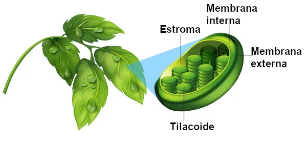

Os cloroplastos são organelas presentes em células vegetais e algumas algas, fundamentais para a fotossíntese, processo que converte a luz solar em energia química. Eles contêm clorofila, o pigmento responsável pela absorção de luz, e são essenciais para a produção de açúcares e oxigênio, vital para a vida na Terra.

Além de energia, os cloroplastos armazenam amido e sintetizam moléculas necessárias para o crescimento da planta. Sua atuação permite que as plantas realizem a fotossíntese e sustentem a base da cadeia alimentar.